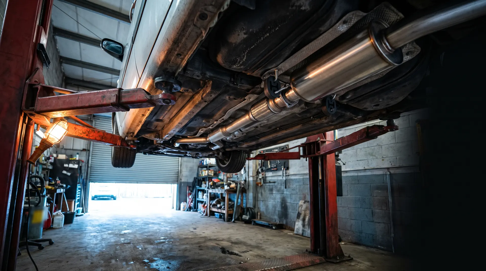
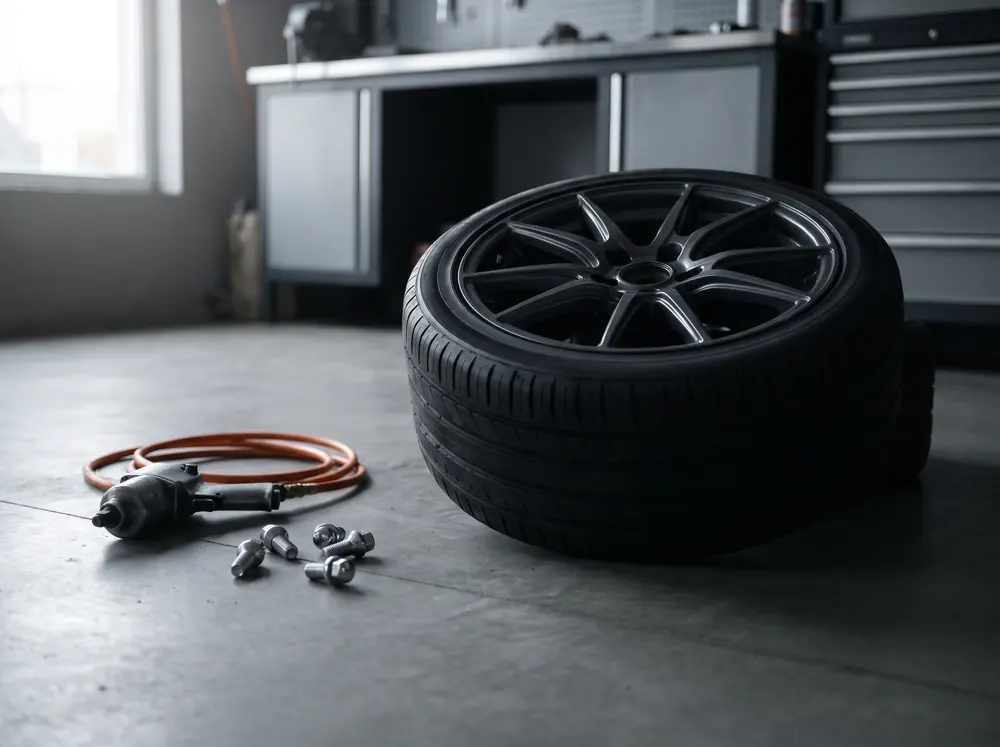

Izpušni sistemi
Mreža dobaviteljev in lastna zaloga. Za voznike, ki želijo športne lonce: INOX lonci slovenskega proizvajalca De-Vito.
- lonci in cevi
- gibljive cevi
- katalizatorji
- kisikove sonde
- liti kolektorji
- športni INOX lonci

Izpušni sistemi, hitri servis, avtodiagnostika, servisni pregledi, vulkanizerstvo, predelave na plin in obnova katalizatorjev.
01 Storitve
Sedem storitev, kot jih servis predstavlja na svoji spletni strani, z lastno zalogo izpušnih loncev, gibljivih cevi in katalizatorjev.
Mreža dobaviteljev in lastna zaloga. Za voznike, ki želijo športne lonce: INOX lonci slovenskega proizvajalca De-Vito.
Redni pregledi in manjša popravila, načeloma brez prijave: takoj, ko sta prosta dvigalo in serviser.
Preverjanje delovanja pogonskega agregata in izpušnega sistema na vašem vozilu.
Večji servisni posegi na vseh znamkah evropskih proizvajalcev. Najavite se vnaprej, da pripravimo dele ter rezerviramo čas in serviserja.

Ilustrativna slikaPremontaža in centriranje na sodobnih, računalniško podprtih napravah.
Predelava vseh znamk vozil na LPG (utekočinjen naftni plin) in CNG (metan). Vozilo dobite z vsemi potrebnimi papirji.
Poškodovano ali neučinkovito aktivno sredico katalizatorja nadomestimo s kovinsko.
02 Kako poteka
01 755 48 10 ali 051 420 680, med delovnim časom.
Vozilo in težava. Za večji servis se dogovorite za termin.
Pod Hruševco 14, 1360 Vrhnika.
Opravljen takoj, ko sta prosta dvigalo in serviser.
Da pripravimo rezervne dele ter rezerviramo čas in serviserja.
03 Delovni čas
04 Vprašanja
Za hitri servis (olje, filtri, žarnice, luknja v pnevmatiki) načeloma ne. Za servisne preglede, večje posege in predelave na plin se najavite vnaprej na 01 755 48 10.
Le na delovne sobote po razporedu, od 8. do 12. ure. Pred obiskom pokličite.
Cen na tej strani ni, ker so odvisne od vozila in dela. Pokličite in opišite, kaj potrebujete.
Večje servisne posege na vseh znamkah evropskih proizvajalcev, predelave na plin za vse znamke vozil.
05 Kontakt